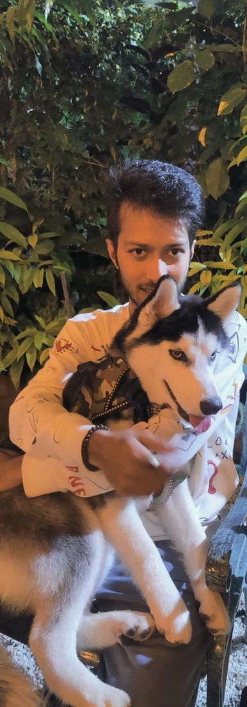

A daily, source-checked reading of the Bhagavad Geeta as a practical life manual.


Portfolio · Indore, India
Visual + narrative architect.
I make pictures and stories, and I help communities hold them — including in Web3. I direct a small studio of AI agents the way a showrunner directs a crew: I set the idea, the rules and the look; they draft; nothing goes out without my yes.

X accounts · pictures
Each account has a job. Several of the pictures belong to a series called democraZy.exe — images about power, perception, and the stories we live inside.
A daily, source-checked reading of the Bhagavad Geeta as a practical life manual.
Quiet tools for mind and mood — breath, noticing, and habit. Not medical advice.


The main studio: pictures, stories, and a red-hooded figure who keeps turning up.


Indian stories and symbols, drawn back into everyday attention.


The messy twin. Experiments and pictures that don’t need a tidy box.


Community · G*BOY and Neuko (iii)
Fan art made in the Neuko / G*BOY world. Not official Neuko work.
I’m an active community member in the G*BOY / Neuko world. I don’t just follow the lore. I make things inside it.
The three pictures here are fan art I made in that world — an off-the-clock crew, a red-hooded kid on a leaking server, and the same kid rebuilt in clay.
Following an alternate-reality story closely means reading clues carefully, and telling real signals from fan noise — and from scams. Community safety is part of the work.


Community · Solana
Fan art for the Solana community. Not official Solana work.
I’m finding my place in the Solana community, with Superteam India as a direction I want to grow in.
I don’t have a shipped Solana product to show yet. The community craft is already there in my Neuko work, which began as a Solana project. This section is a direction, not a list of prizes.


About · experience


I’m an artist who builds with AI agents. I spent the last stretch building my own creative practice and learning that craft hands-on. This site is what came out of it: community work, a set of public voices, and a lot of pictures.
Before that I worked in customer support at Teleperformance, which taught me to stay calm, listen first and explain clearly. I still use that every day with communities and clients.
A value I keep
ahimsa · nobody hurts nobody.
Experience
Self-directed. I run a small AI-agent studio for art and publishing, the eBhagavadGeeta series, and community work in the G*BOY / Neuko world.
Indore. Customer communication, listening first, staying calm under pressure.
Self-taught from a zero budget: one projector, one HDMI cable, free software (MapMap).
Skills
Contact
A role, a freelance project, or an art piece. Write to me, or start from my Linktree — every public door is there.
veeepulll@gmail.com linktr.ee/vipulpapriwal